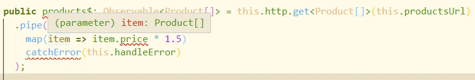
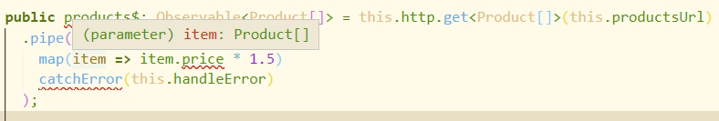
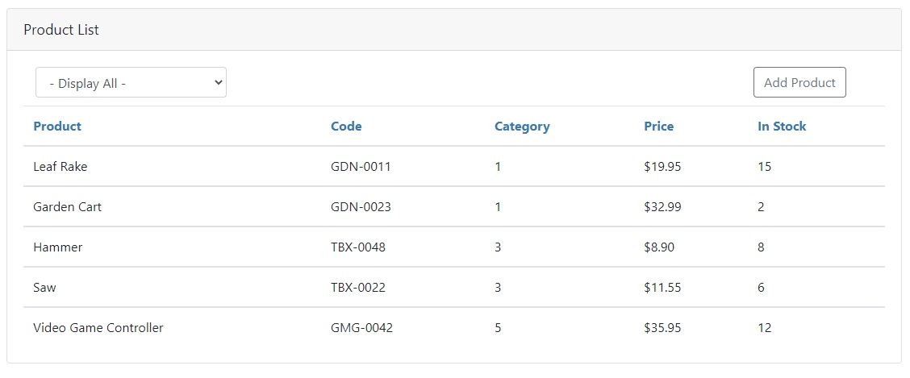
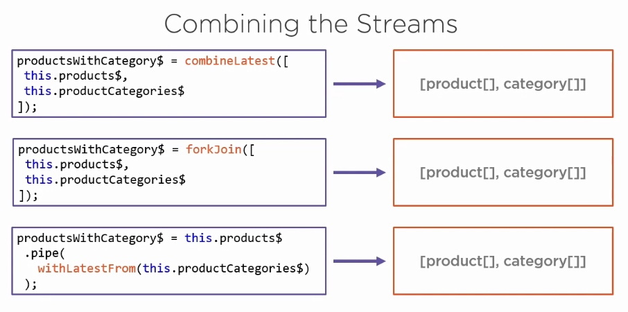
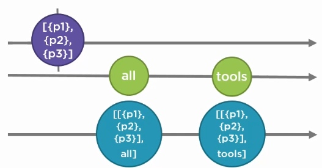

Angular 中 RXJS 的应用
跟随 Acme Product Management 工程来理解 RxJS 在 Angular 中的响应式编程。
初步接触 Reactive
在 Angular 的使用中，我们常常使用编程式模式（procedural pattern）实现从后端服务器获取数据，接下来让我们尝试声明式和响应式来实现这个功能。
使用 Async Pipe
component.ts：
export class ProductListComponent implements OnInit, OnDestroy {
pageTitle = 'Product List';
errorMessage = '';
products: Product[] = [];
sub: Subscription;
constructor(private productService: ProductService) { }
ngOnInit(): void {
this.sub = this.productService.getProducts()
.subscribe(
products => this.products = products,
error => this.errorMessage = error
);
}
ngOnDestroy(): void {
this.sub.unsubscribe();
}
}
component.html：
<table class="table mb-0"
*ngIf="products">
<thead>
<tr>
<th>Product</th>
<th>Code</th>
<th>Category</th>
<th>Price</th>
<th>In Stock</th>
</tr>
</thead>
<tbody *ngFor="let product of products">
<tr>
<td>{{ product.productName }}</td>
<td>{{ product.productCode }}</td>
<td>{{ product.categoryId }}</td>
<td>{{ product.price | currency:"USD":"symbol":"1.2-2" }}</td>
<td>{{ product.quantityInStock }}</td>
</tr>
</tbody>
</table>
在不使用 RxJS 的情况下，需要 subscribe 服务中获取的 Observable，在其 emit 数据时，将取得到的数据绑定到变量 products 上，模板跟随变量改变而渲染。
在使用 RxJS 时可以使用 angular 的 async pipe 直接将 Observable 绑定到模板中，变更检测识别到 emit 时，会自动渲染画面。
component.ts：
export class ProductListComponent implements OnInit, OnDestroy {
pageTitle = 'Product List';
errorMessage = '';
products$: Observable<Product[]>
constructor(private productService: ProductService) { }
ngOnInit(): void {
this.products$ = this.productService.getProducts();
}
}
component.html：
<table class="table mb-0"
*ngIf="products$ | async as products">
<thead>
<tr>
<th>Product</th>
<th>Code</th>
<th>Category</th>
<th>Price</th>
<th>In Stock</th>
</tr>
</thead>
<tbody *ngFor="let product of products">
<tr>
<td>{{ product.productName }}</td>
<td>{{ product.productCode }}</td>
<td>{{ product.categoryId }}</td>
<td>{{ product.price | currency:"USD":"symbol":"1.2-2" }}</td>
<td>{{ product.quantityInStock }}</td>
</tr>
</tbody>
</table>
使用 async pipe 的优点有如下几点：
- Observable 会在组件初始化时被 subscribe。
- 返回每次被 emit 的值。
- 当一个新的项目被 emit 时，无论任何变更检测策略，Angular 都会感知到变更并作出响应的画面渲染。
- 当组件销毁时自动 unsubscribe。
这就是为什么上个实例中使用 async pipe 后不在需要 OnDestroy Hook 的原因，我们不再需要手动 unsubscribe。
在未使用 async pipe 时，subscribe 的 callback 中的异常处理直接通过 Observer 的 error 回调来处理，直接在捕获到异常时将异常 message 赋值到一个 errorMessage 变量中，以插值的方式显示在模板中，那使用 RxJS 的异常处理该如何实现呢？
异常处理
在 Observable 发生任何异常时，catchError 可以捕获到异常，使用这个操作符我们可以：
- 捕获异常后重新抛出一个异常。
- 也可以在异常发生时替换掉异常的 Observable 使操作继续进行。
替换异常
service.ts：
public getProducts(): Observable<Product[]> {
return this.http.get<Product[]>(this.productsUrl)
.pipe(
catchError(err => {
console.log(err);
return of([{ id: 1, productName: 'cart' },
{ id: 2, productName: 'hammer' }]);
})
);
}
如上在获取 product 数据时，如果发生异常可以捕获后返回一组新的数据的 Observable，使get 请求异常时仍然能够获取到一组假数据。
of 和 from 都能够创建 Observable
- of 创建的 Observable 会 emit 每一个实参
- from 的期待实参是一个数组，它创建的 Observable 会 emit 数组中每一个元素
of(...apples)等价于from(apples)
重新抛出异常
service.ts：
public getProducts(): Observable<Product[]> {
return this.http.get<Product[]>(this.productsUrl)
.pipe(
catchError(err => {
console.log(err);
return throwError(err);
})
);
}
throwError 实际上也是个创建 Observable 函数，它创建的 Observable 没有任何项目，只 emit 一个异常通知，所以它也是变相的替换异常。
使用 async pipe 后如何赋值 errorMessage
component.ts
this.products$ = this.productService.getProducts()
.pipe(
catchError(err => {
this.errorMessage = err;
return EMPTY;
})
);
在初始化时，将 service 的 products\( 赋值给组件的 products\) 时可以添加 catchError 操作符，这时当捕获异常时，将 service 处理后的异常信息赋值给 errorMessage变量并显示在画面中。
这里返回了 EMPTY，它是空的 Observable，是 RxJS 中的常量。
import { EMPTY } from 'rxjs';
OnPush 变更检查策略
@Component({
templateUrl: './product-list.component.html',
styleUrls: ['./product-list.component.css'],
changeDetection: ChangeDetectionStrategy.OnPush
})
参照变更检测
当改变为 OnPush 变更检查策略时，通过绑定变量的模板就无法跟随变量变更而进行渲染画面。
这时需要为 errorMessage 也创建一个 Observable。这在后面做 reacting to Action 时再进行修改。
代码重构
这里代码是程序式编程实现的，如果使用声明式编程会有怎样的效果呢？
service.ts：
public products$: Observable<Product[]> = this.http.get<Product[]>(this.productsUrl)
.pipe(
catchError(this.handleError)
);
component.ts
export class ProductListComponent {
pageTitle = 'Product List';
errorMessage = '';
products$ = this.productService.products$
.pipe(
catchError(err => {
this.errorMessage = err;
return EMPTY;
})
);
constructor(private productService: ProductService) { }
onAdd(): void {
console.log('Not yet implemented');
}
onSelected(categoryId: string): void {
console.log('Not yet implemented');
}
}
我们在 service 中声明 products\( Observable，它是用来获取 products 的数据，并为其添加了异常处理管道。然后，在组件中我们声明可以供模板使用的 products\) 并将其引用指向 service 声明的 products\(，同时也再次为组件中的 products\) 添加异常处理管道获取异常信息以供模板显示。
可以看到，我们不但省略了之前的 OnDestroy Hook，现在连 OnInit Hook 也可以省略了，代码也变得清晰。
构造数据
很多时候，从后端服务器获得的数据并不完全是我们想要的，比如下面的我们如果想在获取的数据中，让 Price 上浮 50%。这时候就用到了 map 操作符。
Mapping an Http Response
RxJS 的 map 就像 JavaScript 的 Array.prototype.map 方法一样：
[1,2,3].map(num => num * 2) // [2,4,6]
首先我们要了解一个 Http Response Observable 会返回什么数据。
this.http.get<Product[]>(this.productsUrl)
通过 Http get 请求会返回一个 Response，也就是说这个 Http Response Observable 只会 emit 一个 item——Response。那么我们直接使用 map 将无法得到 Product：
 

可以看到 item 是 Product[] 类型，所以 IDE 报错。也就是说我们需要再将 Product 数组通过 Array.prototype.map 方法进行 price 上浮 50%：
public products$: Observable<Product[]> = this.http.get<Product[]>(this.productsUrl)
.pipe(
map(products => products.map(
product => product.price * 1.5
))
catchError(this.handleError)
);
回顾一下 map 方法，它的返回值是回调函数返回值组成的数组，这里的 callback 返回值是 product.price * 1.5，也就是说现在 products$ 的类型是 Observable
改造数组元素
我们需要的是 Array.prototype.map 的 callback 返回 Product，而不是 number，那我们需要将其返回值构造成 Product 类型：
public products$: Observable<Product[]> = this.http.get<Product[]>(this.productsUrl)
.pipe(
map(products => products.map(
product => ({
...product,
price: product.price * 1.5,
searchKey: [product.productName],
}) as Product
)),
catchError(this.handleError)
);
这里使用了对象字面量的展开操作符 ...，将 product 展开到对象字面量中，并重写 price 属性。
组合 Streams
有时我们需要多个数据集合，并组合它们的 Observable 数据流为同一个数据流。
如下面这个场景的 Category：

我们的 Products 数据流中有 Category 的 Id，但是在画面显示中，我们想要获 Id 所对应的字符串，这时候就需要将 Products 数据流和 Categories 的数据流组合到一起。
Combining Function：
- combineLatest
- forkJoin
Combining Operator：
- withLatestFrom
将 Id 映射为 String
这里使用 Http get Request 获取 Categorise 数据：
public productCategories$ = this.http.get<ProductCategory[]>(this.productCategoriesUrl);
可以看出用上面三种组合方式都会得到同样的结果：

使用 combineLatest 方法组合两个 Observable：
public productsWithCategory$ = combineLatest([
this.products$,
this.productCategoryService.productCategories$
]).pipe(
map(([products, categories]) => products.map(
product => ({
...product,
price: product.price * 1.5,
category: categories.find(c => product.categoryId === c.id).name,
searchKey: [product.productName],
}) as Product
))
)
这里 map(([products, categories]) => {}) 使用了解构的新特性，直接用数组 [products, categories] 映射了接收到的结果。
活动响应
应用程序会有很多用户活动响应，比如用户点击按钮，选择标签等。在这个 APM 实例中，如果想要在列表中进行过滤，那就需要我们的列表数据流响应用户的下拉列表框的选择行为，接下来学习 RxJS 的活动响应。
过滤响应
为 products 添加 filter
根据前面的 RxJS 的 map 操作符嵌套 Array.prototype.map，这次使用 Array.prototype.filter 来做 products 的数据过滤代码如下：
component.ts:
productsSimpleFilter$ = this.productService.productsWithCategory$
.pipe(
map(products => products.filter(product =>
this.selectedCategoryId ? product.categoryId === this.selectedCategoryId : true
))
)
private selectedCategoryId: number = 1;
定义 selectedCategoryId 变量用来获取画面用户 action 值，并通过 filter 过滤结果，这里使用三元运算符来防止 selectedCategoryId 为空，当其为 null 或 undefined 时不添加过滤。
在模板中绑定 productsSimpleFilter$ 后，果然画面上能够过滤掉 categoryId 不等于 1 的数据。
绑定 Categories 数据
根据上面所学绑定 Category select 标签的 option。
component.ts：
categories$ = this.productCategoryService.productCategories$
.pipe(
catchError(err => {
this.errorMessage = err;
return EMPTY;
})
);
...
onSelected(categoryId: string): void {
this.selectedCategoryId = +categoryId;
}
component.html：
<select class="form-control"
(change)="onSelected($event.target.value)">
<option value="0">- Display All -</option>
<option *ngFor="let category of categories$ | async"
[value]="category.id">{{ category.name }}</option>
</select>
为 select 添加 onSelected 事件方法，这里使用 + 号将字符串隐式转换为数字。
但是画面刷新后发现 select 选择不同的 category 时并不能使列表数据变更，那我们该如何通知我们的 stream 来响应用户的活动呢？
Data Stream 和 Action Stream
以 Http 请求获取数据时，我们得到一个 Response，它只有一个 Item，这时这个 Observable 基本上说已经结束了它的使命，有了数据后我们不再需要它，这种 Stream 我们称为 Data Stream。
在用户使用过程中，一个活动可能频繁触发，我们需要一直订阅这种 Observable，响应每次用户的活动，这种 Stream 我们称为 Action Stream。
combineLatest 的特点是：
- 会等到所有的 Observable 都 emit 一次数据之后才开始 emit 数据。
- 在收集完一次数据之后，任何一个 Observable emit 数据，都会 emit 数据，并不会再次等待所有 Observable 再次 emit 数据。
弹珠图如下：

这样就能同时封装 Data Stream 和 Action Stream。
创建 Action Stream 有以下三种方式：
- 使用内置 stream，例如 form 表单的 value changes。
- fromEvent
- Subject/BehaviorSubject
第三种是最常用的方式。
Subject 和 BehaviorSubject
Subject 是的特殊 Observable，也是一个 Observer ，它可以多播。
BehaviorSubject 是特殊的 Subject，它在构造时必须有初始值。
接下来我们用 combineLatest 组合 Data Stream 和 Subject 创建的 Action Stream。
component.ts
private categorySelectedSubject = new Subject<number>();
categorySelectedAction$ = this.categorySelectedSubject.asObservable();
products$ = combineLatest([
this.productService.productsWithCategory$,
this.categorySelectedAction$
])
.pipe(
map(([products, selectedCategoryId]) => products.filter(product =>
selectedCategoryId ? product.categoryId === selectedCategoryId : true
)),
catchError(err => {
this.errorMessage = err;
return EMPTY;
})
);
onSelected(categoryId: string): void {
this.categorySelectedSubject.next(+categoryId);
}
绑定 Data Stream 和 Action Stream 的三部：
- 创建可播的 Observable。
- 组合 Data Stream 和 Action Stream。
- 触发 Action 的 next 方法。
刷新画面已经可以看到在 select 标签选择不同的 category 时，列表中的数据已经能够过滤，但是画面初始化时没有数据。
回顾下 combineLatest 的弹珠图，必须每个 Observable 都 emit 时，组合后 Stream 才会 emit 项目，而我们没有选择 option 时，Action Stream 并没有 emit 任何项目，所以我们不会接收到数据。接下来学习如何设置初始值。
设置初始值
startWith 操作符，可以直接为 Action Stream 添加 startWith 操作的管道：
this.categorySelectedAction$.pipe(startWith(0))
果然这回画面初始化时就能显示所有的 products 了。
BehaviorSubject 是有初始值的 Subject，这里同样也可以使用 BehaviorSubject 来实现：
private categorySelectedSubject = new BehaviorSubject<number>(0);
categorySelectedAction$ = this.categorySelectedSubject.asObservable();
刷新画面，同样也成功修复此功能。
响应异常
前面将变更检测策略改为了 OnPush，导致我们绑定的变量已经不能被检测器所检测，那么就需要将变量编程一个 Observable。
我们的 errorMessage 不会像 Data Stream 一样只使用一次，而是一个会频繁发生的 Action Stream，所以这里选择使用 Subject 来实现。
component.ts
private errorMessageSubject = new Subject();
public errorMessageAction$ = this.errorMessageSubject.asObservable();
public products$ = this.productService.productsWithCategory$
.pipe(
catchError(err => {
this.errorMessageSubject.next(err);
return EMPTY;
})
);
component.html
<div class="alert alert-danger"
*ngIf="errorMessageAction$ | async as errorMessage">
{{errorMessage}}
</div>
添加响应
应用 merge 组合函数和 scan 操作符。
merge 将 products 的 Data Stream 和添加操作的 Action Stream 连成一串，emit 的第一个项目是取回的全部数据，emit 的第二个项目是添加的新 product 数据。通过 scan 操作符将第二个项目添加到第一个项目中并输出。
service.ts
public productsWithAdd$ = merge(this.productsWithCategory$, this.productInsertedAction$)
.pipe(
scan((products: Product[], insertedProduct: Product) => [...products, insertedProduct])
)
这里使用了数组的展开操作符 ... 将 products 拷贝到新的数组中。